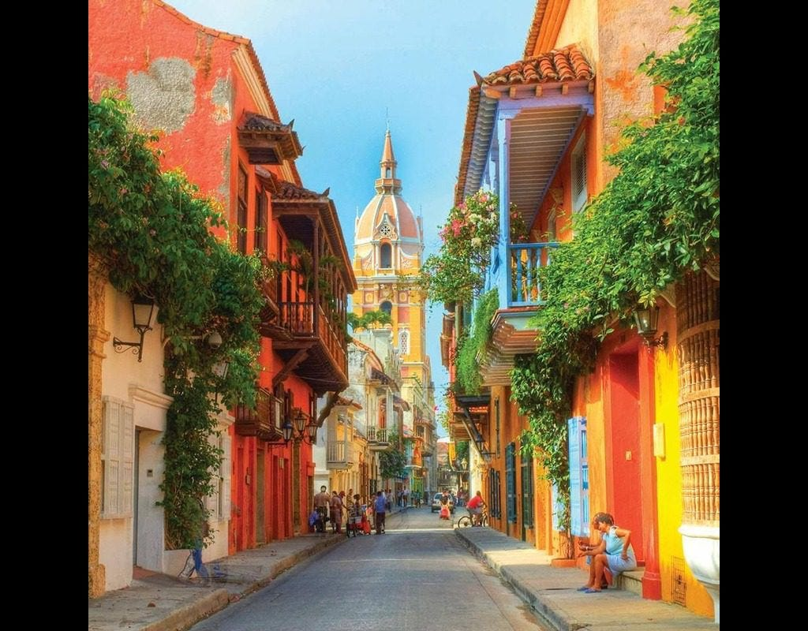
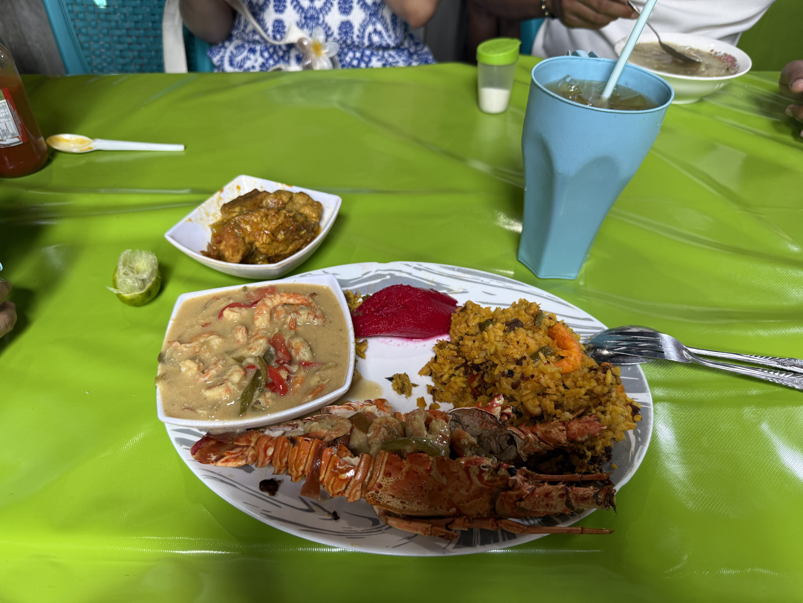
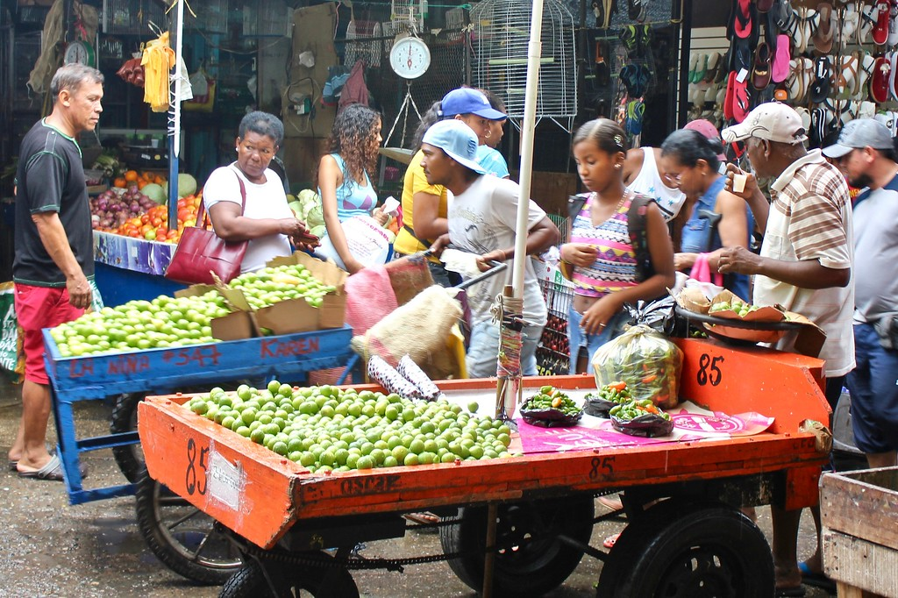
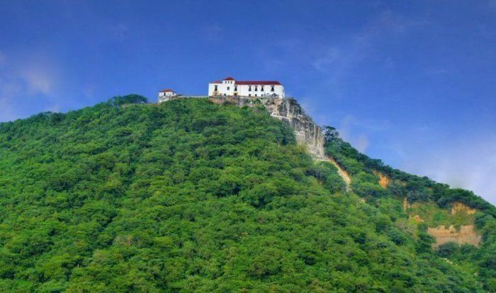
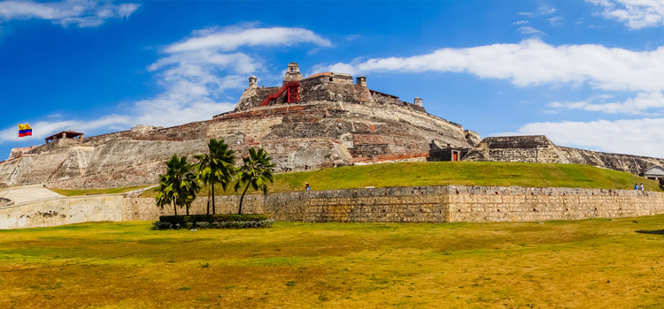
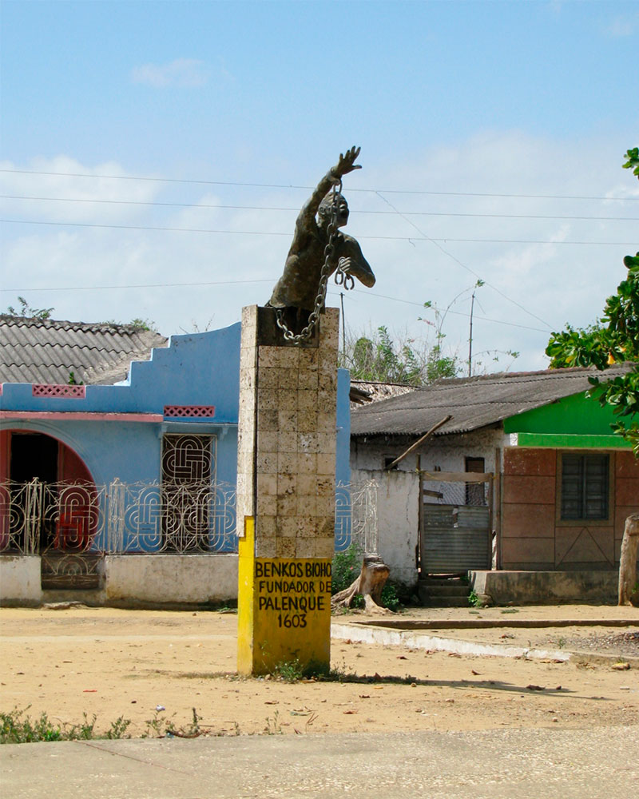
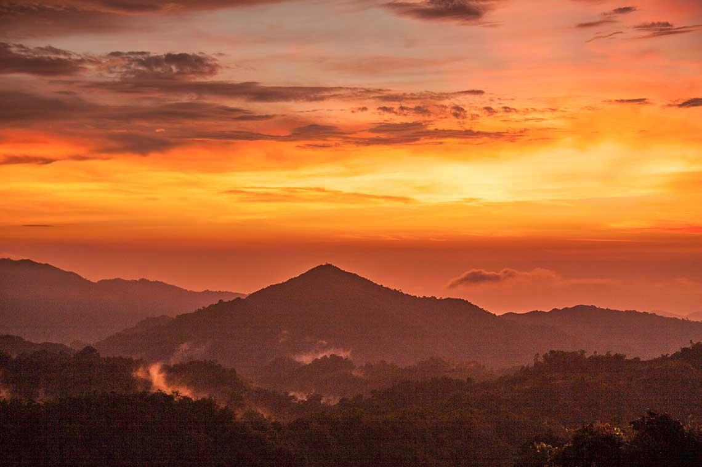
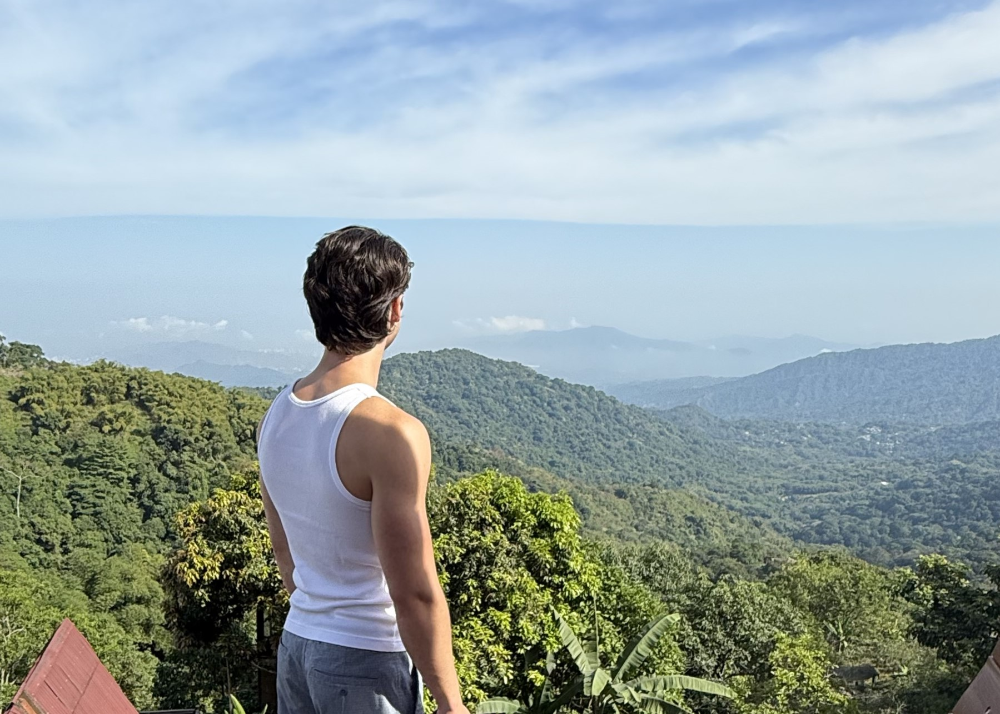
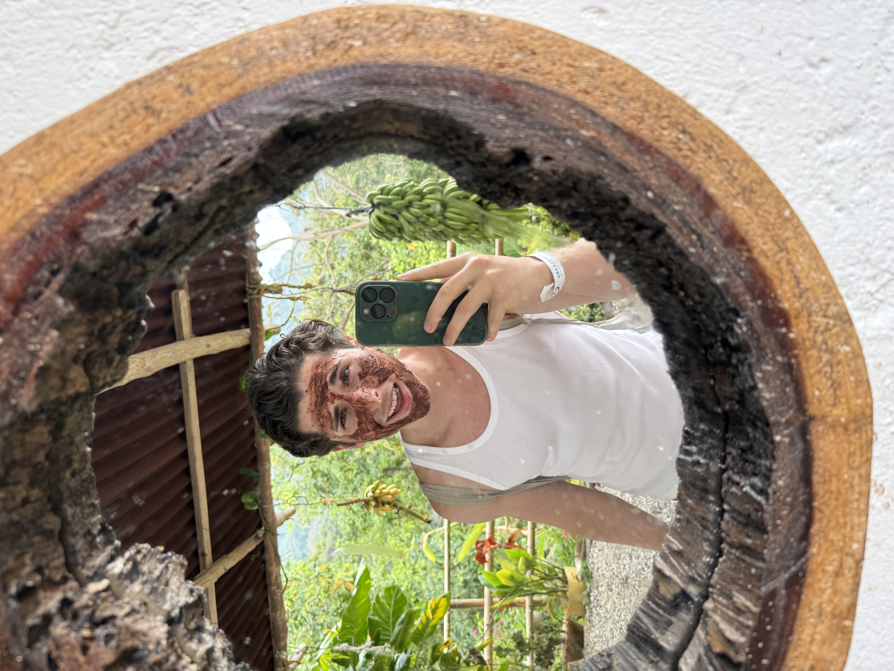
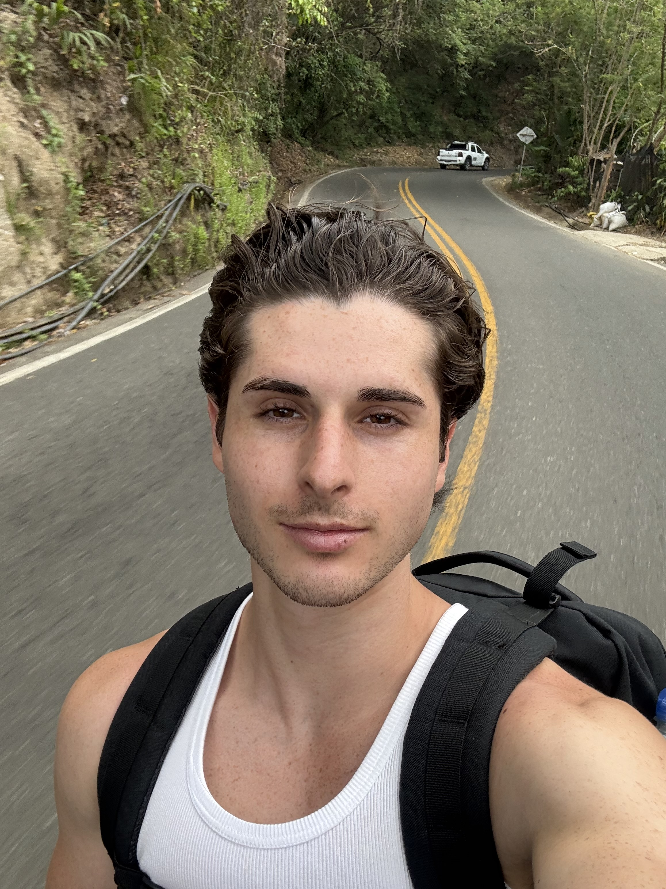

Dear Friends & Family,
Inspired by the travel logs my grandfather sends out, I’ve decided to do the same! Hopefully y'all like this more than my automated text messages and I can stay consistent with it.
I began this little adventure in Ft. Lauderdale with a brief visit to my mom, where I gave her a much needed hug, cooked her some food, and taught her how to make tortillas from scratch. Before I knew it, found myself touching down in Cartagena, Colombia.

Cartagena greeted me with color, heat, and personality. My first day included a stroll through the walled city, a long ATM battle, and some interactions with overly enthusiastic locals. Once night fell, I checked into my hostel, made friends with local street performers, and met Angie, a local engineering student who became my personal tour guide for my days in Cartagena. Not a bad welcome.

The next day, I decided to live like a local and take the bus. I immediately missed my stop and arrived late to meet Angie for a trip to Mercado Bazurto. The market was intense, vibrant, and full of incredible food, including a seafood feast (featuring turtle) that somehow turned into a financial negotiation involving multiple ATMs, motorbikes, and a very patient waitress. I definitely overpaid, but after some haggling, I could tell the difference in cash mattered much more to them than it did to me. Plus, it felt worth it for the experience and the delicious seafood!
We wrapped up the afternoon with views from a historic church at the top of the city. Later that night, I went dancing with David, the front desk attendant at the hostel, and some of his friends. We split our time between rooftop reggaeton clubs and small underground salsa parlors, where I humbly learned I can’t keep up with Colombians on the dance floor.





One of the highlights was a day trip to Palenque, the first free African town in the Americas. Originally hidden behind wooden planks, which is where the town gets its name, it was founded in 1603, more than 200 years before Haiti’s independence. Our guide, Romeo, who casually speaks six languages, filled the day with music, history, and great food.
One thing I found especially interesting was how drums were used as an early pidgin to form routes and signal escape timings back when enslaved people spoke different languages. Naturally, I also ended up teaching someone how to stand on my shoulders. The dancing, incredible food, and a deep sense of history made it one of the most meaningful days of the trip.


From there, I made my way to Minca in the mountains, a peaceful contrast to Cartagena. Think jungle, waterfalls, and coffee farms. I rode a motorcycle along dirt roads, ziplined through the forest, swam in freezing mountain water, and tasted raw cacao that somehow ruined regular chocolate for me.





The final stretch involved a heroic amount of travel by buses, taxis, more motorcycles, just to make it back to Cartagena in time. Naturally, I celebrated by going out dancing one last time before catching my flight home on very little sleep.
As it turns out, the hostel I stayed at on my last night was in a fairly dangerous neighborhood. When I stepped outside in the morning, I was immediately approached by three men on motorcycles who urged me to leave the area as soon as possible. Shortly after, an older woman came over and flagged down a taxi for me, refusing to let me explain that I had no cash left as I was heading to the airport.
I ended up explaining the situation to the taxi driver on the way, and instead of cash, he told me I could buy snacks for his son at a nearby shop. I bought a huge amount of snacks. I probably spent three times what the ride should have cost, but I didn't mind.
All in all, a trip full of stories, characters, minor mishaps, and a lot of fun. Colombia is vibrant and welcoming, and I’m very glad I went. I’m now taking a slow weekend, catching up with friends in the city, going to the ballet, and getting ready for my new job this coming Monday.
More soon.
Gleefully,
Maverick 😁